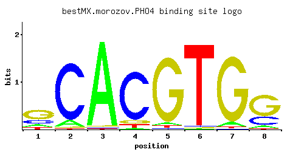

PHO4
YFR034C, phoD
Basic helix-loop-helix (bHLH) transcription factor of the myc-family; binds cooperatively with Pho2p to the PHO5 promoter; function is regulated by phosphorylation at multiple sites and by phosphate availability
Best-performing DNA-binding model.

View and copy the recommended matrices ↘
A | 0.126 0.091 0.976 0.024 0.037 0.009 0.060 0.078 C | 0.214 0.881 0.008 0.854 0.020 0.015 0.005 0.256 G | 0.568 0.020 0.012 0.067 0.920 0.009 0.917 0.647 T | 0.092 0.008 0.005 0.055 0.023 0.968 0.017 0.019
A | 12 9 97 2 3 0 6 7 C | 21 88 0 85 2 1 0 25 G | 56 2 1 6 92 0 91 64 T | 9 0 0 5 2 96 1 1
A | -0.93 -1.26 1.12 -2.59 -2.16 -3.57 -1.67 -1.41 C | 0.17 1.59 -3.11 1.56 -2.20 -2.48 -3.58 0.35 G | 1.15 -2.20 -2.71 -0.99 1.63 -3.00 1.63 1.28 T | -1.25 -3.69 -4.16 -1.76 -2.63 1.11 -2.94 -2.82
Alternative candidate matrices 12
Historical matrix candidates from the original ScerTF database. Expand a source to inspect its original logo, scores, and matrix values.
PHO4Badis et. al.P = 5.18e-07View matrix ↘
PHO4_AFoat et. al.P = 8.84e-15View matrix ↘
PHO4_BFoat et. al.P = 1View matrix ↘
PHO4_AFordyce et. al.P = 5.20e-11View matrix ↘
PHO4_BFordyce et. al.P = 1.14e-10View matrix ↘
PHO4_CFordyce et. al.P = 4.54e-14View matrix ↘
PHO4Harbison et. al.P = 3.79e-11View matrix ↘
PHO4Macisaac et. alP = 2.23e-11View matrix ↘
PHO4Pachkov et alP = 2.23e-11View matrix ↘
PHO4Zhu J and MQ ZhangP = 9.57e-14View matrix ↘
PHO4Zhu et. al.P = 1.51e-14View matrix ↘
PHO4Zhao and StormoP = 1.51e-14View matrix ↘
Gene-level annotations and interactions.
Genes bound in ChIP-chip experiments 165 genes
YAR014C, YAR015W, YAR019C, YBR065C, YBR152W, YBR193C, YBR194W, YCL034W, YCL035C, YCL063W, YCL064C, YCR066W, YDL004W, YDL005C, YDL013W, YDL179W, YDR070C, YDR164C, YDR165W, YDR281C, YDR283C, YDR294C, YDR411C, YDR412W, YDR440W, YDR534C, YEL001C, YEL026W, YER033C, YER034W, YER061C, YER078C, YER079W, YER085C, YER086W, YER129W, YER163C, YFL009W, YFL010C, YFL010W-A, YFR026C, YFR044C, YFR045W, YGL058W, YGL079W, YGL099W, YGL130W, YGL131C, YGL133W, YGL139W, YGL140C, YGL258W, YGR106C, YGR167W, YGR253C, YGR273C, YHR024C, YHR025W, YHR053C, YHR054C, YHR055C, YHR130C, YHR131C, YHR132W-A, YHR178W, YHR207C, YHR208W, YHR210C, YHR211W, YHR212C, YHR214W, YHR214W-A, YIL036W, YIL037C, YIL076W, YIL077C, YIL121W, YIL136W, YIL137C, YIL147C, YJL051W, YJL102W, YJL103C, YJL172W, YJL173C, YJL200C, YJR004C, YJR005W, YJR030C, YJR058C, YJR059W, YJR098C, YJR099W, YKL084W, YKL142W, YKL150W, YKL151C, YKR084C, YLR008C, YLR009W, YLR152C, YLR205C, YLR206W, YLR266C, YLR267W, YLR382C, YLR383W, YLR397C, YLR439W, YML029W, YML030W, YML032C, YML065W, YML066C, YML069W, YMR062C, YMR063W, YMR102C, YMR222C, YMR223W, YMR267W, YNL009W, YNL027W, YNL029C, YNL057W, YNL059C, YNL186W, YNL230C, YNL233W, YNL238W, YNL241C, YNL269W, YNL271C, YNL333W, YNL334C, YOL148C, YOL160W, YOR126C, YOR127W, YOR162C, YOR163W, YOR164C, YOR165W, YOR237W, YOR273C, YOR274W, YOR337W, YOR390W, YPL012W, YPL013C, YPL027W, YPL132W, YPL133C, YPL160W, YPL161C, YPL216W, YPL217C, YPL251W, YPL253C, YPR004C, YPR025C, YPR026W, YPR036W, YPR105C, YPR106W
Genes affected by TF deletion 237 genes
YDR372C, YGL173C, YKR043C, YLR244C, YLR216C, YNL052W, YNR061C, YOR191W, YBR189W, YDR220C, YHR178W, YJL053W, YLR406C, YMR224C, YMR194W, YOR377W, YOR381W, YGL231C, YHL015W, YHL047C, YKR013W, YOR220W, YOR258W, YJR078W, YBR218C, YGL038C, YFR033C, YMR189W, YPL018W, YOR382W, YBL034C, YFL013W-A, YKL016C, YKR105C, YLL034C, YOR317W, YBL021C, YDR314C, YLR156W, YBR067C, YGR034W, YJL019W, YMR072W, YMR136W, YOL073C, YOL139C, YPL265W, YGL076C, YNL300W, YNL302C, YPL079W, YPL081W, YIL092W, YIL124W, YLR287C-A, YMR020W, YMR022W, YOR203W, YPL245W, YPL247C, YAL011W, YLR066W, YDR411C, YLR225C, YLR285W, YOR196C, YOR198C, YPL249C-A, YML111W, YAL014C, YDL135C, YDL075W, YDR225W, YEL051W, YLR101C, YML001W, YDL041W, YHR063C, YLR344W, YOR298W, YPR028W, YPR060C, YBR265W, YHR215W, YBR071W, YDL012C, YDR538W, YJR123W, YMR142C, YOL111C, YOR352W, YOR298C-A, YPL273W, YAR075W, YGL148W, YJL158C, YLR161W, YML063W, YMR321C, YMR295C, YNL312W, YER137C, YIL064W, YBR052C, YDR418W, YDR450W, YER187W-A, YER131W, YHR010W, YHR012W, YIL098C, YJR038C, YKR057W, YLR293C, YLR264W, YLR295C, YNL067W, YNL069C, YOL031C, YOR209C, YPL225W, YLR042C, YBR047W, YDR447C, YDR417C, YGL214W, YHL001W, YHL031C, YLR292C, YLR294C, YNL031C, YNL096C, YAR027W, YDL111C, YDL081C, YDL143W, YDL083C, YDR209C, YGR137W, YJL102W, YLR075W, YLR448W, YMR173W-A, YPL004C, YBR140C, YBR299W, YBR108W, YBR080C, YBR082C, YBR112C, YBR144C, YDL021W, YDR110W, YDR173C, YDR543C, YDR545W, YGR081C, YJL036W, YKL001C, YLL017W, YMR119W, YNL191W, YOL120C, YOL122C, YOR331C, YOR367W, YOR383C, YGR266W, YJL167W, YMR304C-A, YDR174W, YDR509W, YLL045C, YLR351C, YLR325C, YMR146C, YMR119W-A, YNL162W, YOL121C, YDR297W, YKL156W, YLR167W, YML067C, YML073C, YNL322C, YPL131W, YPL163C, YBR022W, YBL107C, YBR026C, YDR396W, YHR018C, YIL102C, YLR268W, YNL109W, YEL027W, YBR181C, YDL120W, YEL065W, YPL074W, YCR005C, YDR033W, YER167W, YPL198W, YBR244W, YHR137W, YHR139C, YHR203C, YJL076W, YKL065C, YKL096W-A, YLR047C, YMR215W, YPL010W, YGR085C, YGR027C, YGR089W, YKL035W, YMR095C, YMR130W, YOR369C, YMR276W, YBR089W, YLL051C, YMR094W, YMR096W, YOR306C, YDR360W, YER102W, YGL158W, YGL100W, YGR267C, YGR273C, YIL041W, YIL043C, YKL197C, YMR307W
Genes supported by both experiments 4 genes
YDR411C, YGR273C, YHR178W, YJL102W
Predicted TF–TF partners 2 genes
HAC1, MET32